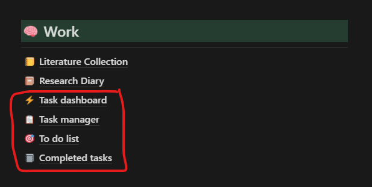

[1] "2022-08-06 15:10:55 IST"1 TL;DR
- Use Notion to manage your daily tasks
- Four templates to download; To-do-list, Completed task list, Task manager and Task dashboard
- Those who want to download all the templates in one go, click here
- Duplicate and use them in Notion
2 Using Notion as a task management dashboard
With the ability to make databases, Notion becomes an excellent tool to manage task lists. In this article, I am going to give you a quick tour of how you can use Notion as a task management dashboard with the templates I made.
There are four templates to add to your Notion database and you need all four of them to function properly. If you don’t want to individually download each of them, then I have a single-page master template which features all the templates I made in one place. You can find it here.

- To-do-list: Acts as the master database where all tasks are stored. By default only shows incomplete tasks.
- Completed task list: Same template as above, but only tasks that are completed are shown. Act as an archive for completed tasks.
- Task manager: Task manager interface where each task is arranged and displayed categorically. By default only shows incomplete tasks.
- Task dashboard: A dashboard which informs you which tasks are due and how long are they due to completion.
3 To-do-list
First, let us see the To-do-list. Specifically, we will be seeing the ‘Master table’ view which lists out all the tasks which are yet to be completed.

Like any basic to-do list, this list has task names and due date columns, along with many other columns. I have also tagged the tasks into their respective category and their priority. The ‘Date added’ and ‘Due status is automatically calculated once you input a row value in the table. The ’Due status’ column is dependent on a formula which takes in the ‘Due date’ value. The possible values for the ‘Due status’ column are; task finished, overdue, due today, due tomorrow, someday and later. Here ‘someday’ label means that the task has no due date mentioned and the ‘later’ label means that the task has at least 7 days before the due. The ‘task finished’ is only given to tasks which have the ‘Done’ column check box checked. The rest of the labels are what it says.
You can change every single aspect of this table to suit your needs. What might be tricky to change is the ‘Due status’ column as it is governed by a formula which may look complex but is very easy.
Due status formula
if(prop("Done") == false,
if(formatDate(prop("Due date"),"L") == formatDate(now(), "L"), "Due today",
if(prop("Due date") < now(), "Overdue",
if(prop("Due date") <= dateAdd(now(), 1, "days"), "Due tomorrow",
if(empty(prop("Due date")), "Someday", "Later")))), "Task finished")The formula is a series of if statements. The syntax for the if statement in Notion is as follows;
boolean ? value : value
if(boolean, value, value)From the syntax, you can see that the if statement is dependent on a Boolean value.
So let us try to understand what this formula is trying to calculate, by taking each section separately.
if(prop(“Done”) == false
This means that if the ‘Done’ column is unchecked then run the rest of the statements, if not, then it returns the label ‘Task finished’ which you can see in the last part of the formula. The checkboxes in Notion follow Boolean values. Checked means true and unchecked means false.
if(formatDate(prop(“Due date”),“L”) == formatDate(now(), “L”), “Due today”
This is yet another ‘if’ statement but this time we are reformatting the date. The reason why we are reformatting the date is that, in Notion, any date is followed by time, so 12-12-2022 is Notion is denoted as 12-12-2022 12:00 AM. So there can be some issues where ‘Due today’ won’t be properly shown. So reformatting the date to ‘day’ units is easier to work with. The now() function returns the current date. Therefore this formula simply returns the label ‘Due today’ if the due date matches the current date.
if(prop(“Due date”) < now(), “Overdue”
This formula returns an ‘Overdue’ label if the due date is past the current date.
if(prop(“Due date”) <= dateAdd(now(), 1, “days”), “Due tomorrow”,
The dateAdd() function takes in the first value, which is the current date returned from the now() function, and then adds 1 unit of “days” to it. Therefore the formula boils down to checking if the due date is less than or equal to tomorrow and returns the ‘Due tomorrow’ label if it does. We give less than or equal to sign because we want the counter-statement to be strictly greater than so that, only then does the rest of the if statement runs. Also, the less than condition can never be fulfilled here as the first statement checks if the due date matches the current day.
if(empty(prop(“Due date”)), “Someday”, “Later”
Now sometimes we don’t want to give the due date or we forgot to give them to a task. This is notified by the ‘Someday’ label. Now the ‘Later’ label is given when the ‘Due tomorrow’ condition fails, which means that the due date is greater than tomorrow.
Now the reason why I went to explain this formula so elaborately is for you to appreciate the formula feature in Notion. Using clever little formulas like this you can efficiently automate many boring tasks. If it wasn’t for this formula, we would have to manually check between the current date to the due date. So something to keep in mind while designing Notion databases.
Now Notion also features some powerful ways of visualizing tabular data via ‘views’. You can see that there is a ‘Group table’, ‘Priority table’ and a ‘Status table’ views in the database. These are nothing but the ‘Master table’ data grouped into different categories for easy visualization.
Video: Different views of the to-do list (click here)
Okay, now we have a fair idea of what is there in this database and what each of the columns does. Now the funny part is that we won’t be adding any tasks to this table using this page. Instead, we will be exclusively using the ‘Task manager’ for it.
4 Task manager
Video: Task manager
The task manager page is your go-to page to list out incomplete tasks. By default, the page has categorized all tasks into their respective category as subsections. The inbox section is where you add your task to the to-do list and as soon as you add the associated category, it vanishes from the inbox and goes to its category subsection. Thus you don’t have to worry about post categorizing into the subsection parts after you have added a task. And once you check the ‘Done’ column for a task, it is then archived on the Completed task list page to preserve the history of completed tasks.
Video: Adding a task in the task manager
5 Task dashboard

Treat the task dashboard page as your command centre for all the tasks. Remember all those ‘due status’ labels that we had in the to-do list database. With the help of Notion’s grouping feature for databases, we can easily visualize all the tasks according to their deadlines. In the ‘task list subsection,’ I have also added table views showing tasks associated with a particular priority. The purpose of this page is to easily get a glance at tasks that close the due date.
6 Completed tasks
The completed tasks page acts as an archive showcasing all the completed tasks. As someone used to say to me, it brings great joy to tick off all those tasks from the to-do list after spending your time and energy completing them. The primary function of this page is to preserve and record task completion history. The database is identical to that of the earlier shown to-do-list database, as I have filtered it to only show row values where the ‘Done’ column is checked.
7 Conclusion
I hope you have fun using this template. I enjoyed making this template and I aimed to make it simple and effective to use. To summarise, the to-do list is your main database, actually your only database. Everything else is just a modified version of this database where the info is shown in a different form using filtering and grouping features. After duplicating this template, you can tweak each of the parameters to suit your liking. You only need to change the parameters in the to-do-list database as the changes in it will be reflected in the rest of the pages. The only other thing that you will be needing to modify after you have changed the key parameters in the database are the headings, which are pretty straightforward to change. With that, I hope you find this template useful. Any feedback and suggestions are most welcome. You can comment them below the article.
Last updated on
Reuse
Citation
BibTeX citation:
@online{johnson2022,
author = {Jewel Johnson},
title = {Using {Notion} as Your Task Manager},
date = {2022-06-30},
url = {https://jeweljohnsonj.github.io/one-carat-blog//posts/notion_task_manager},
langid = {en}
}
For attribution, please cite this work as:
Jewel Johnson. 2022. “Using Notion as Your Task Manager.”
June 30, 2022. https://jeweljohnsonj.github.io/one-carat-blog//posts/notion_task_manager.